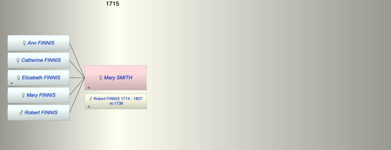

| [Index] |
| Mary SMITH |
|  |
| m. 16 Oct 1736 Robert FINNIS (1714 - 1807) at Sutton |
| Children (5): |
| Ann FINNIS |
| Catherine FINNIS |
| Elizabeth FINNIS |
| Mary FINNIS |
| Robert FINNIS |
| Events in Mary SMITH's life | |||||
| Date | Age | Event | Place | Notes | Src |
| 16 Oct 1736 | Married Robert FINNIS (aged 22) | Sutton | Note 1 | ||
| 23 May 1807 | Death of husband Robert FINNIS (aged 93) | Note 2 | |||
| Note 1: Robert Finnis of Sutton and Mary Smith of Guston ex PR. |
| Note 2: ex Will. buried Coldred in 1807 aged 93 which fits with bap Sutton 28 Mar 1714 son of James and Mary |
| Created on a Mac™ using iFamily for Mac™ on 8 Oct 2023 |